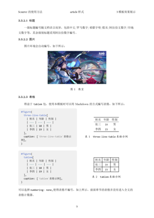
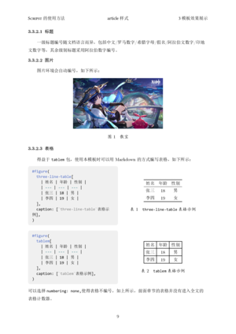

Scripst
Scripst は、Typst を基盤としたテンプレートパッケージです。シンプルで効率的なドキュメントテンプレートを提供し、日常のドキュメント、課題、ノート、論文などさまざまなシーンに適しています。
🚀 特性
- 高拡張性：モジュール化された設計で、テンプレートの拡張が容易
- 多言語対応：さまざまな言語に対応したローカライズ設計
- カスタムカウンターブロックのサポート：定理、問題など、さまざまなカウンターとスタイルを生成しやすい

 

📦 インストール
Typst のインストール
Typst がインストールされていることを確認してください。以下のコマンドを使用してインストールできます：
sudo apt install typst # Debian/Ubuntu
sudo pacman -S typst # Arch Linux
winget install --id Typst.Typst # Windows
brew install typst # macOS
または、Typst 公式ドキュメント を参照して更多信息を確認してください。
Scripst テンプレートのダウンロード
方法 1：手動ダウンロード
- Scripst GitHub リポジトリ にアクセス
<> CodeボタンをクリックDownload ZIPを選択- 解凍後、テンプレートファイルをプロジェクトディレクトリに配置
ディレクトリ構造の提案
project/
├── src/
│ ├── main.typ
│ ├── components.typ
├── pic/
│ ├── image.jpg
├── main.typ
├── chap1.typ
├── chap2.typ
テンプレートが src/ ディレクトリ内にある場合、インポート方法は次のとおりです：
#import "src/main.typ": *
方法 2：Typst ローカルパッケージ管理の使用
Scripst を手動でダウンロードし、次の場所に配置します：
~/.local/share/typst/packages/local/scripst/1.1.0 # Linux
%APPDATA%\typst\packages\local\scripst\1.1.0 # Windows
~/Library/Application Support/typst/packages/local/scripst/1.1.0 # macOS
または、次のコマンドを実行します：
cd {data-dir}/typst/packages/local/scripst
git clone https://github.com/An-314/scripst 1.1.0
ここで、data-dir は Typst のデータディレクトリを指します。例えば、Linux 系统では ~/.local/share/typst、Windows 系统では %APPDATA%\typst、macOS 系统では ~/Library/Application Support/typst です。
その後、Typst ファイル内で直接インポートします：
#import "@local/scripst:1.1.0": *
これで Scripst テンプレートを使用できます。
typst init を使用してプロジェクトを迅速に作成します：
typst init @local/scripst:1.1.0 project_name
📄 Scripst の使用
Scripst テンプレートのインポート
Typst ファイルの先頭でテンプレートをインポートします：
#import "@local/scripst:1.1.0": *
article ドキュメントの作成
#show: scripst.with(
title: [Scripst の使用方法],
info: [このテンプレートは記事用です],
author: ("著者1", "著者2", "著者3"),
time: datetime.today().display(),
abstract: [要約内容],
keywords: ("キーワード1", "キーワード2", "キーワード3"),
contents: true,
content_depth: 2,
matheq_depth: 2,
lang: "zh",
)
🔧 テンプレートパラメータ
| パラメータ | 型 | デフォルト値 | 説明 |
|---|---|---|---|
template |
str |
"article" |
テンプレートを選択 ("article", "book", "report") |
title |
content, str, none |
"" |
ドキュメントタイトル |
info |
content, str, none |
"" |
ドキュメントの副題または補足情報 |
author |
array |
() |
著者リスト |
time |
content, str, none |
"" |
ドキュメントの日付 |
abstract |
content, str, none |
none |
ドキュメントの要約 |
keywords |
array |
() |
キーワード |
preface |
content, str, none |
none |
序文 |
font_size |
length |
11pt |
フォントサイズ |
contents |
bool |
false |
目次を生成するかどうか |
content_depth |
int |
2 |
目次深度 |
matheq_depth |
int |
2 |
数式番号深度 |
lang |
str |
"zh" |
言語 ("zh", "en", "fr" など) |
✨ テンプレート効果の例と説明
article ドキュメント

book ドキュメント


report ドキュメント


📜 貢献
Issue または Pull Request を通じて参加を歓迎します！改善提案があれば、ぜひ議論に参加してください。
- GitHub リポジトリ：Scripst
- 問題報告：Issue を作成して議論を開始
📌 フォント
このプロジェクトでは、次のフォントをデフォルトで使用しています：
- 主要フォント：CMU Serif, Consolas
- 替代フォント：Linux Libertine
- および SimSun, SimHei, KaiTi などの中文字体
デフォルトのフォントを使用する前に、フォントがインストールされていることを確認し、必要に応じて ./src/configs.typ で置換してください。
📦 依存
一部の機能では、Scripst が次の Typst パッケージを参照しています：
🎯 TODO
- [ ]
beamerテンプレートの追加 ```